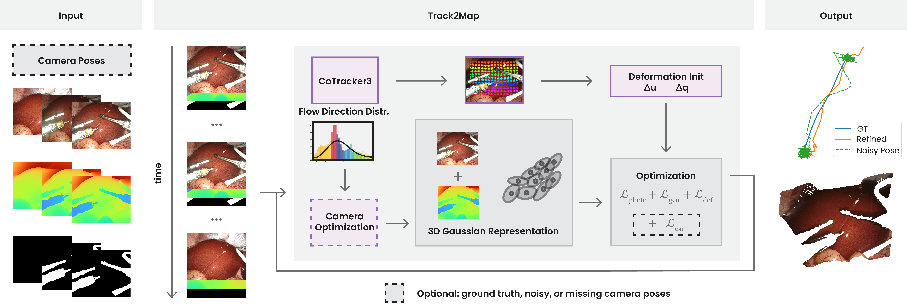
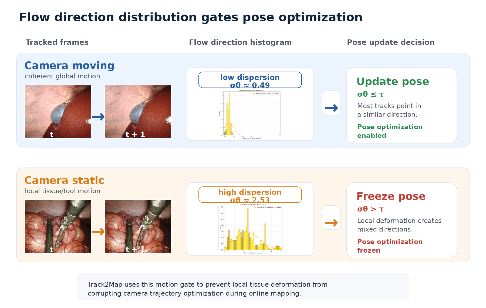
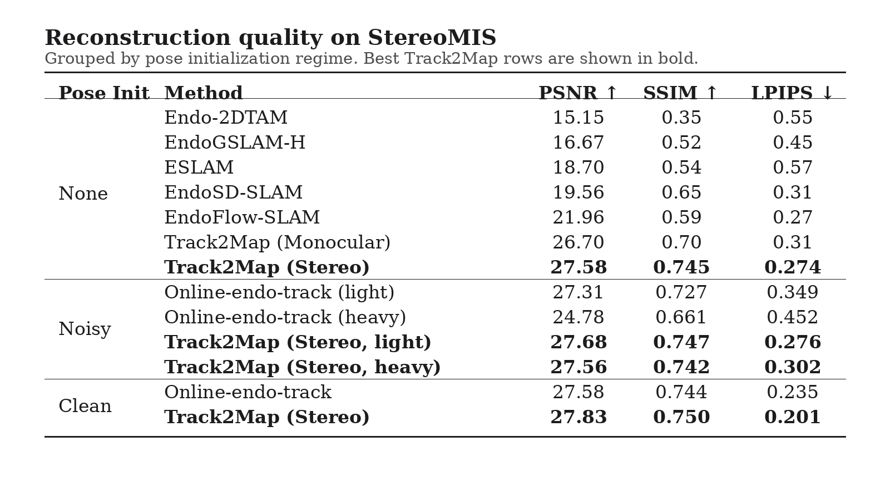
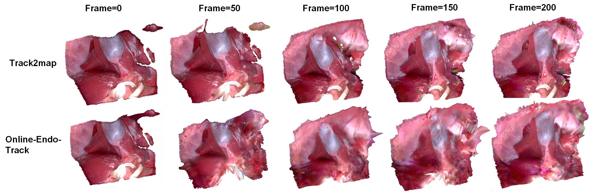
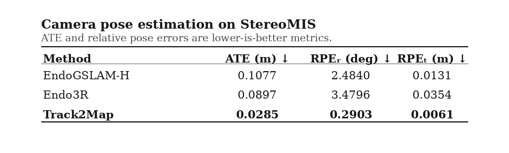
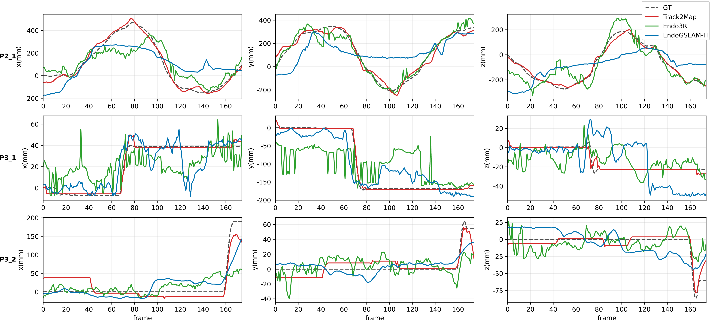

Pose priors optional
Runs with clean, noisy, or absent camera pose priors.
MICCAI 2026
University College London · UCL Hawkes Institute · Intuitive
Track2Map is an online stereo 3D Gaussian Splatting pipeline for deformable surgical scenes. It jointly refines camera trajectory and deformable anatomy, using dense 2D tracks to initialize deformation and to gate pose updates during camera-static periods.
Runs with clean, noisy, or absent camera pose priors.
Reduces drift by avoiding pose updates when tissue/tool motion dominates.
Produces metric deformable 3D Gaussian reconstructions from surgical stereo video.
Demo
If the embedded video does not play in your browser, download the demo video.
Method

Dense 2D correspondences are estimated online between consecutive surgical frames.
Tracks are lifted with stereo depth into 3D anchors, while flow-direction spread decides whether pose updates are safe.
Anchors initialize deformation, and online 3DGS optimization refines the scene and the camera pose when enabled.
We use dense 2D track directions as a lightweight surgical motion prior. Camera motion tends to produce a coherent direction distribution, while local tissue/tool motion produces a broad or multi-modal distribution. Pose optimization is enabled only when the circular standard deviation of track directions is below a threshold.

When the endoscope moves, tracked points tend to flow coherently. When the camera is static, tool interaction and tissue deformation produce mixed, local directions.
Track2Map checks whether most tracks move in a similar direction. If the direction spread is low, it updates the camera pose; if the spread is high, it freezes the pose and lets deformation explain the motion.
Freezing pose during high-dispersion periods prevents local tissue/tool motion from being absorbed into the camera trajectory, reducing drift during online mapping.
Results




BibTeX will be updated once Springer/arXiv metadata is available.